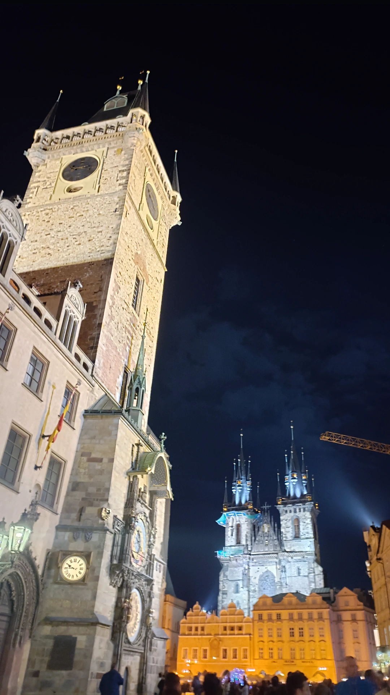
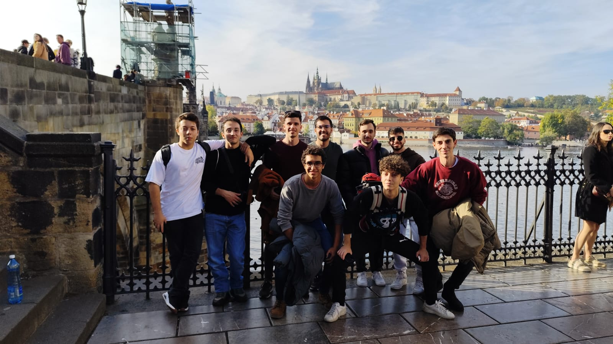
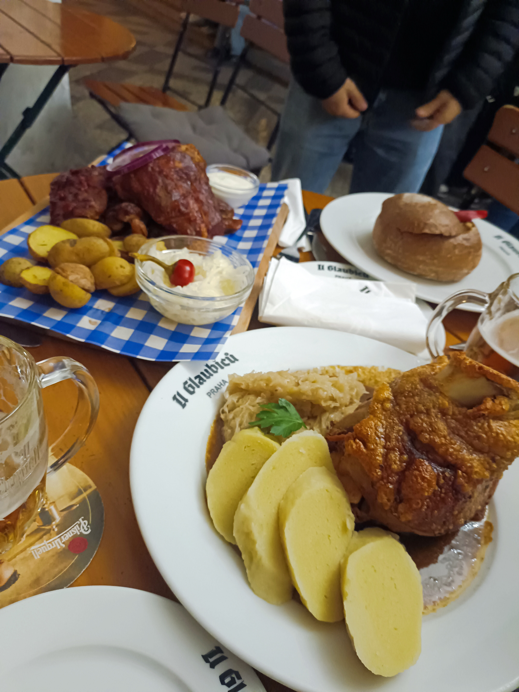
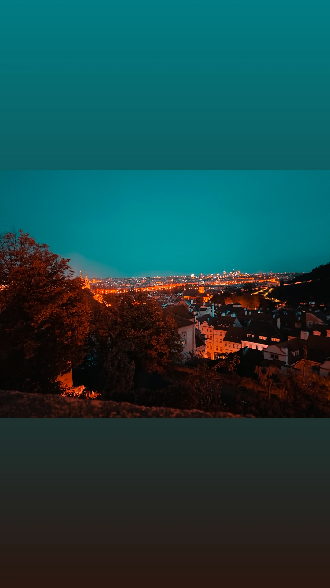
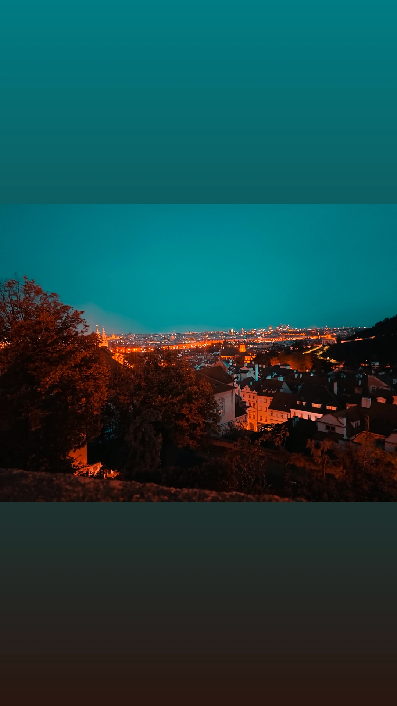

Exploring Prague with Friends
Prague is a city that feels like stepping into a fairytale. From its historic bridges to its lively streets, it offered an unforgettable experience. Here’s a recount of our incredible journey with friends!
Our Itinerary
Day 1: Arrival and Old Town Exploration
We arrived in Prague and wasted no time diving into the charm of the Old Town. Highlights included the Astronomical Clock, the bustling square, and a hearty dinner at a local Czech restaurant.
Day 2: Charles Bridge and Prague Castle
The morning started with a walk along Charles Bridge. We then explored the majestic Prague Castle and St. Vitus Cathedral, ending the day with stunning views of the city at sunset.
Day 3: Local Markets and Farewell
Our final day was spent at local markets, tasting traditional Trdelník and buying souvenirs. We wrapped up our trip with a relaxed afternoon by the Vltava River.
Photo Gallery
 

Travel Tips
- Best Time to Visit: Spring and early autumn for pleasant weather.
- Currency: Czech Koruna (CZK) - Carry some cash for local markets.
- Transport: The tram system is a convenient way to get around.
- Don’t Miss: Trying a traditional Czech beer at a local pub.